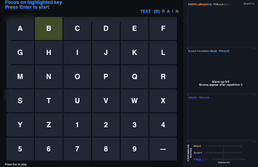
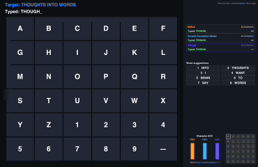
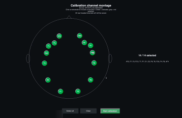
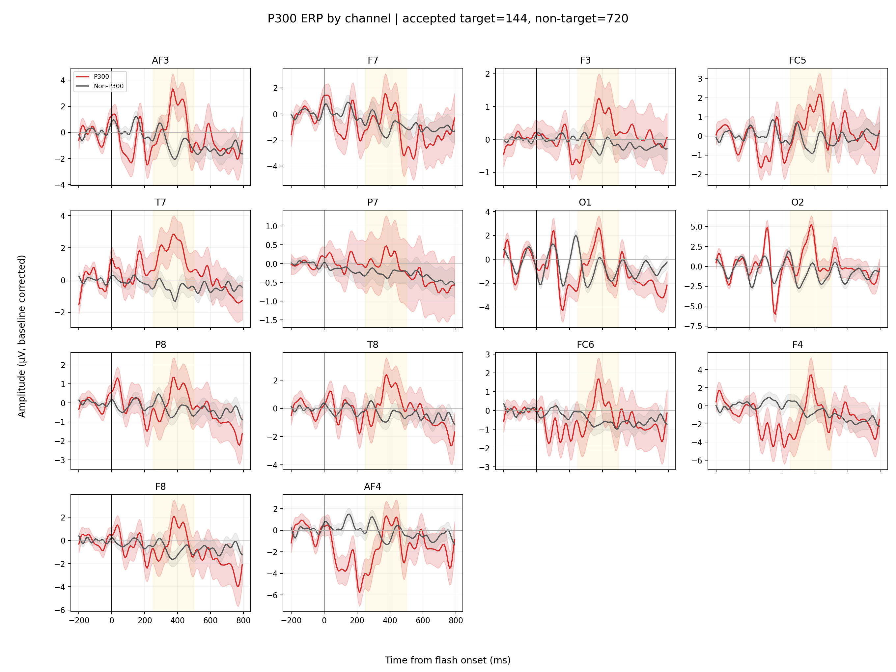

Select a montage
Evaluate how a decoder behaves when the available electrodes change.
REAL-TIME EEG FOUNDATION MODEL EVALUATION
A brain-in-the-loop evaluation demo using online P300 spelling.
EEG → MODEL → ACTION
Offline accuracy does not capture timing, calibration burden, montage changes, or how errors accumulate during actual use.
LiveEval turns these constraints into a reproducible P300 spelling task and reports behavior people can see.
02 / INTERACTIVE REPLAY
Choose an evaluation track and replay a short spelling sequence.
03 / EVALUATION PROTOCOL
The current prototype follows the complete path from signal collection to typed output.
Evaluate how a decoder behaves when the available electrodes change.
Collect target and non-target responses under controlled visual timing.
Compare pretrained representations with controls under the same flashes.
Track accuracy, speed, errors, and the final text produced by each system.
04 / CURRENT DEMO SESSION
Values shown in the current Summit video. These are session-specific and are not population-level claims.
character accuracy
+27 points vs. SWLDA in this demoThe research study will extend this comparison across participants, sessions, devices, and model families.
foundation model
SWLDA
randomized control
05 / INSIDE THE TASK
Real interfaces expose the practical decisions hidden by an offline score.

Labeled target responses establish the subject-specific signal used by every downstream evaluation track.

The same flashes feed every evaluation track while text, accuracy, and information transfer rate update online.

Channel selection makes cross-montage compatibility part of the evaluation.

ERP inspection connects online behavior back to the underlying target response.
06 / SUMMIT VIDEO
The original presentation introduces the model context, then follows the P300 spelling workflow and session comparison.
FULL HD · 02:54 · CAPTIONS INCLUDED